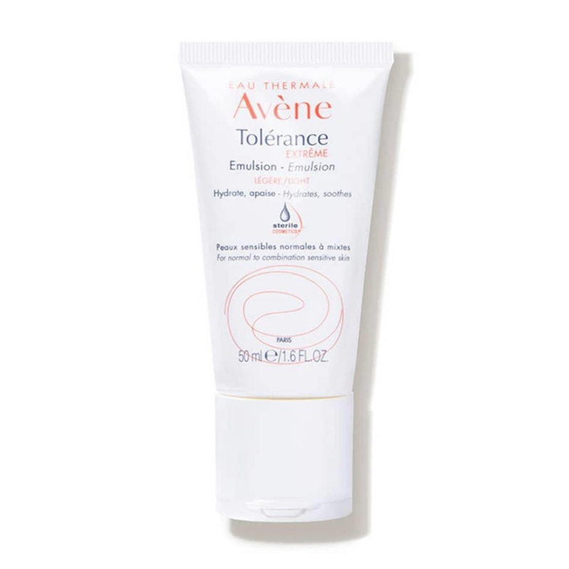
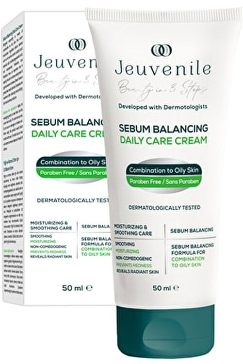
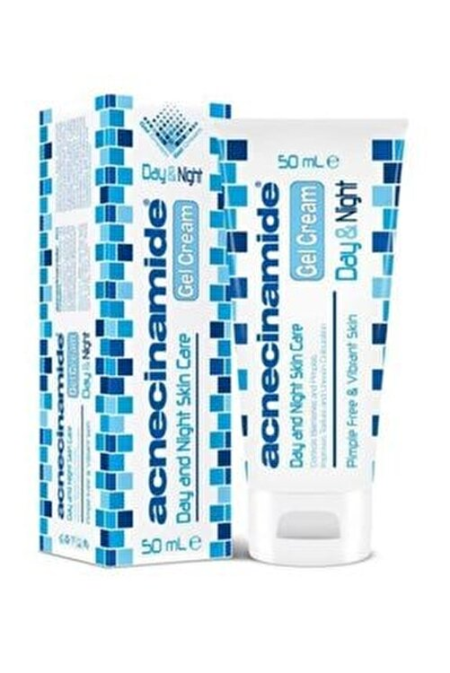
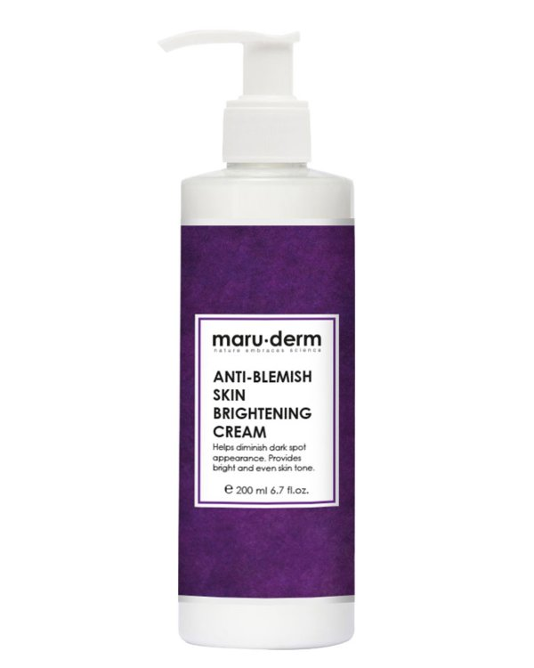

Cildi Nemlendirme
Cildimizi nemlendirmeli miyiz? Cildimizi nemlendirmek neden bu kadar önemli? Yağlı ciltler de cildini nemlendirmeli mi?
Vücudumuzun olduğu gibi cildimizinde suya ihtiyacı vardır.Suyun; cildin en üst tabakasında bulunan stratum corneumdaki enzim faaliyetleri, hücrelerin beslenmesi gibi görevleri vardır. Bu yüzden transepidermal su kaybı(TEWL) dediğimiz cildin içeriden su kaybetmesini engellemek önemlidir. Bu şekilde ciltte gerçekleşen reaksiyonları devam ettirmeyi, cilt bariyerini korumayı sağlayabiliriz.
Yapılan araştırmalarda uzun süreli nemlendirici kullanımının cilt bariyerini koruduğu, ciltteki su dengesini sağladığı, yaşlandırmayı geciktirici bakım yaptığı, cilt hastalıklarının tedavisinde yardımcı olduğu, TEWL'nin azalarak kuruluğı engellediği kanıtlanmıştır. Bu yüzden cilt tipi her ne olursa olsun cildi nemlendirmek önemlidir. Cildinize uygun içerikte nemlendiriciler seçerek cildinizi nemlendirmelisiniz.
| Tıkayıcı(Oklüzif) | Nem Çekici(Hümektan) | Yumuşatıcı(Emolyan) |
| petrolatum, dimeticon, lanolin, beeswax, parrafinium liquidum, mineral oil, shea butter, cocoa butter | gliserin, sodium hyaluronate, urea, propylene glycol, panthenol, sorbitol, butylene glycol, AHA | squalene, linoleic asid, oleic asid, castor oil, ceramides, olive oil, isopropyl isostearate, vitamin E |
Tıkayıcı, oklüzif dediğimiz örtürücü görev üstlenen nemlendiriciler krem formundaki ürünlerde, özellikle kuru ciltler için olan ürünlerde karşımıza çıkar. Yağlı ciltlerin, T bölgesi yağlı olanların buna ihtiyacı yoktur. Egzamalı ciltler, kuru ciltler ve bölgesel kuruluk yaşayanlar bu içeriği üst sırada barındıran ürünlere bakabilirler. Hali hazırda sivilceli veya sivilceye meyilli bir cildiniz varsa da oklüzif içerikleri üst sıralarda tercih etmeyin.
İkinci grup hümektanlar yani nem çekiciler. Tek görevleri nem çekmek değildir, içeriğe göre değişir. Genellikle her cilt tipine uygun olmakla birlikte yağlı ciltler en çok bu içeriğin üst sırada olduğu ürünleri tercih etmeliler.Hümektanlara ek olarak bal, aloe vera gibi içerikleri de söyleyebiliriz.
Emolyanlar yani yumuşatıcı nemlendiriciler. Ürünü cildinize uygulamanızı kolaylaştırır, kaygan bir doku verir. Yine yumuşaklık hissiyatının oluşmasına yardımcı olur. Çeşitleri çoktur. İçeriğe ve ürünün formülasyonuna göre cilt tiplerine göre seçilmelidir.
Ürün Deneyimlerim
Avene Tolerance Extreme Emulsion
Bu krem çok hassas ve karma-yağlı ciltler için mükkemmmel, 10 üzerinden 10 bir ürün. 7 adet içerikten oluşuyor. Parfüm, esansiyel yağ içermiyor. Hava almayan bir paketleme olduğundan dolayı koruyucu bile yok. İçinde squalene denilen bir yağ var. Bu yağ bir emolyandır ve cilt yağı yerine geçer. Bu sebeple cilt bariyerini toparlar. Yağlı,sivilceli cildimde cilt bariyerimin bozuk olduğu dönemde severek kullandım. Eczanelerde satılıyor.
Hada Labo Jel Krem

İlk beş içerikte hümektanlar yer alan onu squalene yağının takip ettiği bir krem. Jel bir yapıya sahip.Karma, yağlı ciltli biri olarak bayılarak kullandım. Çok kuru ciltler gündüz güneş kreminin altına kullanabilir. Cildi cam cilt gibi gösteriyor. Gratiste satılıyor ve indirimde 100 tlye kadar düşüyor.
Jeuvenille Anti-Blemish Jel Krem
Bu krem hümektanların bol olduğu ve leke açan niacinamide içeriğinin %5 oranında kullanıldığı bir ürün. Hafif bir yapısı var. Karma-yağlı ciltleri memnun eden bir nemlendirmeye sahip. Uzun vadede cilt bariyerini toparlıyor ve yeni oluşan sivilce lekelerini açmaya yardımcı oluyor. Kuru ciltler yine güneş kreminin altına kullanabilir. Gratiste ve Trendyol'da satılıyor.
Hada Labo Jel Krem
Bu krem de aynı jeuvenille gibi niacinamide içeren cilt lekelerini açan ve cilt bariyerini güçlendiren mükemmel bir krem. Yeni formülünde limon aramosı kullanılmış. Çok hassas ciltleri belki memnun olmayabilir. Onun dışında tüm cilt tipleri kullanabilir. Eczanede satılıyor.
Maruderm Leke Açıcı Jel Krem
Bu krem de hümektanların bol olduğu ve leke açan niacinamide içeriğinin %5 oranında kullanıldığı bir ürün. Shea yağı da içeriyor. Hafif bir yapısı var. Karma-yağlı ciltleri memnun eden bir nemlendirmeye sahip. Uzun vadede cilt bariyerini toparlıyor ve yeni oluşan sivilce lekelerini açmaya yardımcı oluyor. Boyutu 250 ml olduğundan vücudunuza da kullanabilirsiniz. Kuru ciltler yine güneş kreminin altına kullanabilir. Gratiste ve Trendyol'da satılıyor. İndirimde 80 tl'ye kadar düşüyor. Bu fiyata bu boyutta bu performans... 10/10.
Sizinde bu ürünlerden denediğiniz varsa, görüşlerinizi paylaşırsanız sevinirim. Denememi istediğiniz ürünleri de bildirmenizi rica ediyorum. İstek ve görüşler için; tıklayınız.